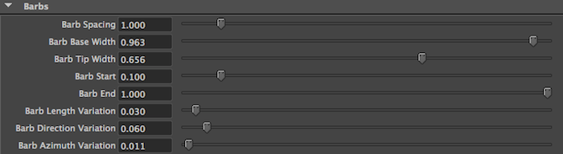

Feathers in Yeti can be created using the Instance node and our custom procedural feather geometry which was designed to make the process user friendly while producing an extremely light weight means of creating many feathers within a chosen rendering engine.
Yeti uses a custom feather node which can be created via the CRF button on the Yeti shelf or Create Feather in the Yeti menu. Once created you will see the default feather shape at the scenes origin, this is a simple viewport representation of the final rendered feather.
In component mode you can select the vertices of the feather to adjust it’s shape, this control skeleton can be thought of as a simple polygonal surface but limited to the default topology.
Parameters to control the barb creation and tearing can be found in the Feather’s Attribute Editor. These parameters are passed into the Yeti graph as geometric attributes and used by our procedural generator to create a renderable feather, as the feather is evaluated they are used along with a unique id of the feather to generate variations per feather.
Note
When editing an individual feather you will always see the skeletal control cache and generated barbs. Once instanced displaying the barbs produces very heavy results, thus by default each Yeti graph will only draw them in Skeleton mode - if desired you can switch this to Full in the Yeti nodes parameters.
Yeti generates individual barbs within the feather shape for viewport preview and at render time, the barb output may be controlled via the Barb parameters in the Feather attribute editor. Below are a list of the parameters, what they do and an example of the output.
| Parameter | Description |
|---|---|
| Barb Spacing | Controls the density of the barbs by defining how much space there should be between each one, this also sets an overall width for the barb that will provide a packed look to the final feather. |
| Barb Base Width | Width at the base of the barb, if left at 1 the barb will use the computed packed width. |
| Barb Tip Width | Width at the tip of the barb. |
| Barb Start | Where the barbs actually start along the length of the feather. |
| Barb End | Where the barbs end along the length of the feather. |
| Barb Length Variation | Varies the length of the individual barbs. |
| Barb Direction Variation | Varies the direction around the normal of the feather surface. |
| Barb Azimuth Variation | Varies the direction perpendicular to the normal of the feather surface. |
Default (1), Barb Start 0.5 (2), Barb End 0.5 (3), Barb Length Variation 0.5 (4), Barb Direction Variation 0.5 (5), Barb Azimuth Variation (6)¶
Due to the complex underlying structure of feathers they are prone to barb clumping either as a result of some unfortunate accident or just general wear and tear. These “clumps” where the little hooks on the barb become entangled with neighbouring barbs gives the appearance of tearing along the edges of the feathers. This is simulation in our procedural feathers with the Tearing parameters described below.
| Parameter | Description |
|---|---|
| Tearing | How much overall tearing in the feather. |
| Tear Count | The number of tears in the feather. |
| Tear Size | How big each individual tear may be. |
Default (1), Tearing 1.0 (2), Tearing 0.76 & Tear Count 70 (3), Tearing 0.88 & Tear Size 0.88 (4)¶
Once a feather has been created it can be used in a graph using the Add Object controls in a Yeti nodes Graph AE palette and selecting the feather node from the list of scene objects available.
The Instance node is used with the feather object to scatter the feathers on the surface of an object, either as is or if being instanced to fibres it may be deformed to provide much more control over the shape of the final plumage. All of the instance parameters may be used to control the look of the result.
A graph that uses the Instance node to instance feather geometry to generated fibres.¶
The result from the above graph showing the skeletal cages of the instanced feathers deformed.¶
Note
When deforming feathers it’s suggested to use $N as the up vector to make sure they’re correctly aligned to the poles of the surface.
Besides any user attributes Yeti also exports some special feather attributes to the rendering engine to help with shading.
| Attribute | Description |
|---|---|
| strandu (float) | U parameter along the generated barb (this is always generated by fibres, but generating feathers forces it to be exported). |
| feather_param (float) | Parameter along the length of the feather. |
| feather_part (float) | 0 - rachiis, 1 - right side barbs, 2 - left side barbs |